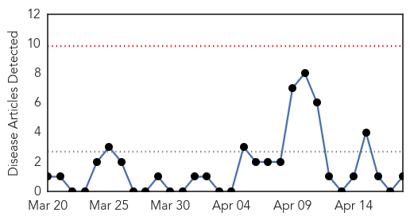
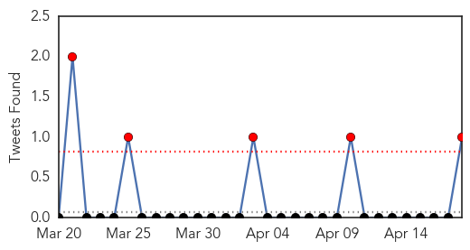
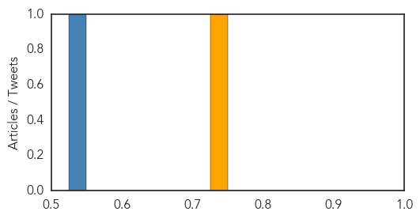

Swine Flu
30-Day Web Trend
0 alerts, 0 warnings

30-Day Twitter Trend
5 alerts, 0 warnings

Article Locations
Article Confidences
Top Articles:
Top Tweets:
- 0.533
- FluFactFriday: Antivirals reduced risk of death by 25% in adults admitted to hospital w/ 2009 H1N1 pandemic flu http://t.co/a8D9XKX2nR
Mumps
30-Day Web Trend
4 alerts, 9 warnings

30-Day Twitter Trend
0 alerts, 0 warnings

Article Locations

Article Confidences

Top Articles:
- 0.998
- Hoboken school, Stevens Institute of Technology, reports eight mumps cases
- 0.997
- Why You Can Still Catch The Mumps, Even If You've Been Vaccinated
- 0.992
- Why Mumps And Measles Can Spread Even When We're Vaccinated
- 0.990
- Why Mumps And Measles Can Spread Even When We're Vaccinated : Shots
- 0.975
- Third U.S. Mumps Outbreak This Year Happens in New Jersey
- 0.962
- Mumps Cases Spread to New Jersey College Despite Students Having Vaccines
- 0.946
- Some Olentangy Students Told To Stay Home After Multiple Mumps Cases
- 0.910
- Nearly 250 Mumps Cases Reported In Two Central Ohio Counties
- 0.893
- No immunizations required for Ohio college students, lawmakers say mumps outbreak shows issue deserves another look
- 0.889
- Spike in Mumps Cases Reported Around Illinois
- 0.878
- City of Hoboken warns of mumps outbreak on Stevens Institute Campus
Top Tweets:
-
No tweets found for Apr 18, 2014